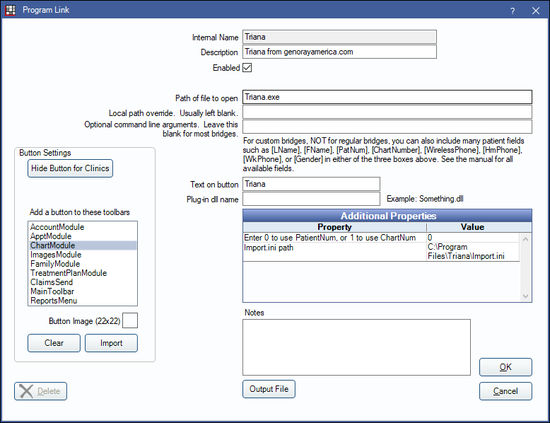

Genoray Triana Bridge
In the Main Menu, click Setup, Program Links. Double-click on Triana from genorayamerica.com.
Genoray Triana is an imaging software. Website: http://www.genorayamerica.com/.
To enable the bridge:
- Check the Enabled box.
- Verify the Path of file to open.Note: The Triana program may be installed in a different location.
- Double-click on a row in Additional Properties to change settings.
- Use the PatNum (enter 0) or ChartNum (enter 1) as the patient ID.
- Enter the Import.ini path.
- Set up a clickable bridge button.
- Under Add a button to these toolbars, highlight where to display the button.
- Enter the Text on button.
- (Optional) Import an image to show on the button (22 x 22 pixels).
- If using clinics, click Hide Button for Clinics. Select which clinics the button should display on.
- Click OK.
Technical Details
Command Line: An example of the command line function that we use would be:
C:\Program Files\Triana\triana.exe -Fc:\Program Files\Triana\import.iniThis command line will open Triana with the patient from the import.ini file. Programmatically we update the import.ini when the user clicks the button.
Import.ini Path
[OPERATION]
EXECUTE=3 (required)
(Available 2: Open, 3: Registration and open/If he or she has been registered just reopen, 4: Onlyregistration)
[PATIENT]
PATIENTID=Patient_ID(Chart No.) (Reqired)
FIRSTNAME=Patient_First_Name (Required)
LASTNAME= Patient_Last_Name
SOCIAL_SECURITY=Social_Security_Number
BIRTHDAY=YYYYMMDD ( Ex: 19801231 )
PATIENTCOMMENT=Patient comment (This will be blank)
GENDER= Sex_ID (Available 1: Male, 2: Female, 3: Another)